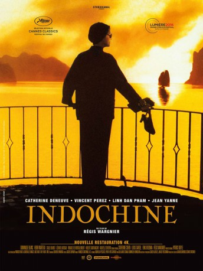

#10701 Indochine
Auszeichnungen: 1 Oscars gewonnen für 1 Oscars nominiert 1 GoldenGlobes gewonnen
 
 IMDB-Wertung: 7.1 / 10
IMDB-Wertung: 7.1 / 10  Tomatometer: 72
Tomatometer: 72  Metascore: 0
Metascore: 0 
Die Französin Eliane Devries führt ein abgeschirmtes und mondänes Leben in der französischen Kolonie Indochina. Dort leitet sie mit strenger Hand die riesige Kautschukplantage ihres Vaters. Elianes einzige Bezugsperson ist ihre 16-jährige Adoptiv-Tochter Camille. Das unzertrennliche Gespann wird jedoch auf eine harte Probe gestellt. So verlieben sich beide Frauen in den jungen Marineoffizier Jean-Baptiste, der im Zuge der Aufstände gegen die Kolonialherren nach Saigon geschickt wurde. Nachdem Eliane die ersten Anschläge auf ihre Plantage knapp überlebt, entfernt sie sich allmählich von Jean-Baptiste. Camille, die inzwischen gegen ihren Willen mit ihrem Cousin Tanh verheiratet wurde, trauert dem Offizier jedoch noch immer hinterher. Ihr einziger Ausweg scheint die Flucht aus der Welt der Kolonialherren. Eine Flucht voller dramatischer Schicksalsschläge...
Jahr: 1992
Dauer: 151 Minuten
FSK: 12
Land: Frankreich Studio: Concorde Home EntertainmentTonspuren:
Untertitel:
Auflösung: 1080p (1920x1040) Größe: 10752 MB
Genre: Drama, Krieg, Liebe
Regisseur: Régis Wargnier
Drehbuch: Erik Orsenna, Louis Gardel, Catherine Cohen, Régis Wargnier
Soundtrack: Patrick Doyle
Darsteller:
 Catherine Deneuve als Éliane
Catherine Deneuve als Éliane Vincent Perez als Jean-Baptiste
Vincent Perez als Jean-Baptiste- Linh Dan Pham als Camille
- Jean Yanne als Guy
- Dominique Blanc als Yvette
 Carlo Brandt als Castellani
Carlo Brandt als Castellani- Andrzej Seweryn als Hebrard
- Thi Hoe Tranh Huu Trieu als Mme. Minh Tam
- Nhu Quynh Nguyen als Sao
- Henri Marteau als Émile
- Gérard Lartigau als L'Admiral
- Hubert Saint-Macary als Raymond
- Mai Chau als Shen
- Alain Fromager als Dominique
- Chu Hung als Mari de Sao
- Jean-Baptiste Huynh als Étienne, adulte
- Thibault de Montalembert als Charles-Henri
- Eric Nguyen als Tanh
- Trinh Thinh als Minh
- Tien Tho als Xuy
- Nguyen Lan Trung als Kim
- Michel Voïta als Edmont de Beaufort
- Martin Barre Astich als Enfant motte de terre
- Lam Binh als Mourante mission
- Tat Binh als Le notable
- Nguyen Huu Bong als Client Mme Minh Tam
- Jean-Pierre Debris als Père Roland
- Clayton Dowty als Charlotte
- Anoy Ew Lek Ee als L'enfant sampan
- Edgar Givry als Commissaire priseur
- Quang Hai als Frère de On Dinh
- Ngo Hoa als Vieux mandarin
- Ba Hoang als Camille à 5 ans
- Hong Khien als Matrone accoutheuse
- Gia Khoan als Acteur danseur oiseau
- Huang Kiem als Acteur Kim Lan
- M. Lap als Vieux monsieur aux bésicles
- Anna Lim als Vieille chinoise
- Van Quy als Fils de Sao (16 ans)
- Dhevaakar Suppiah als Sarair
- Mme Ta als La douairiére
- Julie Tan als Hoa
- Thoy Ten als Acrtrice danseuse oiseau
- Ngoc Thoa als Prisonnière Poula Condor
- Van Thoi Nguyen als Trang Vonh
- Truong Thu als Fils de Sao (12 ans)
- Jean de Trégomain als Lieutenant village allaitement
- Dang Si Van als The Old Man in Tonkin
- Hai Yen als Musicien théâtre
Datei: X:\1992\Indochine (1992, FSK12, 1920x1040).mkv seit 22.02.2019
Festplatte: Gemischt-01+Anime
 Es gibt insgesamt 57 Filme in der Gruppe '1992'
Es gibt insgesamt 57 Filme in der Gruppe '1992'